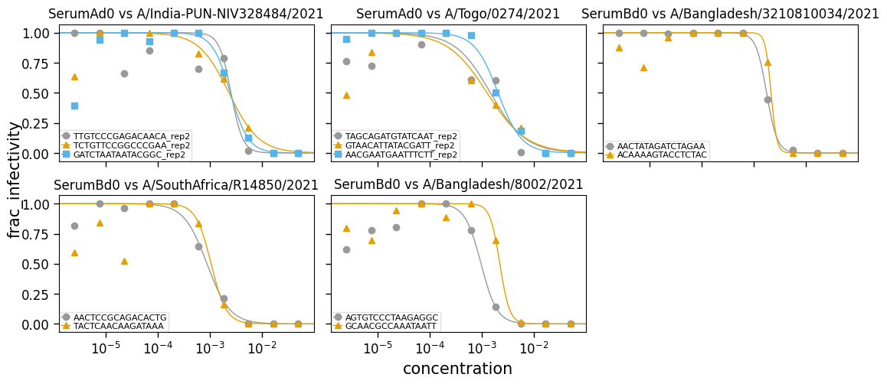
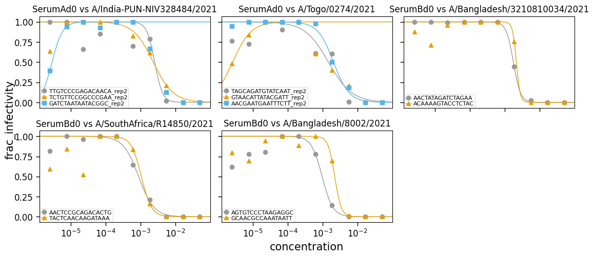

Test curve fitting on some real data¶
Test curve fitting on some noisy real data:
[1]:
import neutcurve
import pandas as pd
Read in the data:
[2]:
data = pd.read_csv("test_curves_data.csv")
Fit the curves and display fit parameters:
[3]:
fits = neutcurve.CurveFits(
data,
conc_col="concentration",
fracinf_col="frac_infectivity",
serum_col="serum",
virus_col="strain",
replicate_col="barcode",
)
fit_params = fits.fitParams(average_only=False, no_average=True).drop(
columns=["nreplicates", "ic50_str"]
)
with pd.option_context("display.float_format", "{:.2g}".format):
display(fit_params)
| serum | virus | replicate | ic50 | ic50_bound | midpoint | slope | top | bottom | r2 | |
|---|---|---|---|---|---|---|---|---|---|---|
| 0 | SerumAd0 | A/India-PUN-NIV328484/2021 | TTGTCCCGAGACAACA_rep2 | 0.0026 | interpolated | 0.0026 | 3.8 | 1 | 0 | 0.86 |
| 1 | SerumAd0 | A/India-PUN-NIV328484/2021 | TCTGTTCCGGCCCGAA_rep2 | 0.0023 | interpolated | 0.0023 | 1.5 | 1 | 0 | 0.91 |
| 2 | SerumAd0 | A/India-PUN-NIV328484/2021 | GATCTAATAATACGGC_rep2 | 0.0025 | interpolated | 0.0025 | 2.5 | 1 | 0 | 0.78 |
| 3 | SerumAd0 | A/Togo/0274/2021 | TAGCAGATGTATCAAT_rep2 | 0.0015 | interpolated | 0.0015 | 1.3 | 1 | 0 | 0.86 |
| 4 | SerumAd0 | A/Togo/0274/2021 | GTAACATTATACGATT_rep2 | 0.0013 | interpolated | 0.0013 | 1.2 | 1 | 0 | 0.78 |
| 5 | SerumAd0 | A/Togo/0274/2021 | AACGAATGAATTTCTT_rep2 | 0.0021 | interpolated | 0.0021 | 1.9 | 1 | 0 | 0.99 |
| 6 | SerumBd0 | A/Bangladesh/3210810034/2021 | AACTATAGATCTAGAA | 0.0018 | interpolated | 0.0018 | 4.2 | 1 | 0 | 1 |
| 7 | SerumBd0 | A/Bangladesh/3210810034/2021 | ACAAAAGTACCTCTAC | 0.0021 | interpolated | 0.0021 | 8 | 1 | 0 | 0.95 |
| 8 | SerumBd0 | A/SouthAfrica/R14850/2021 | AACTCCGCAGACACTG | 0.00089 | interpolated | 0.00089 | 2 | 1 | 0 | 0.98 |
| 9 | SerumBd0 | A/SouthAfrica/R14850/2021 | TACTCAACAAGATAAA | 0.0011 | interpolated | 0.0011 | 3 | 1 | 0 | 0.74 |
| 10 | SerumBd0 | A/Bangladesh/8002/2021 | AGTGTCCCTAAGAGGC | 0.00097 | interpolated | 0.00097 | 2.8 | 1 | 0 | 0.86 |
| 11 | SerumBd0 | A/Bangladesh/8002/2021 | GCAACGCCAAATAATT | 0.0022 | interpolated | 0.0022 | 4.6 | 1 | 0 | 0.91 |
Plot the curves:
[4]:
fig, _ = fits.plotReplicates(
ncol=3,
attempt_shared_legend=False,
widthscale=1.2,
legendfontsize=8,
titlesize=12,
)

Note that the fits are not as good if we do not do fix_slope_first=True (the default, which first fits with a fixed slope and then re-fits all parameters including the slope):
[5]:
fits_nofix = neutcurve.CurveFits(
data,
conc_col="concentration",
fracinf_col="frac_infectivity",
serum_col="serum",
virus_col="strain",
replicate_col="barcode",
fix_slope_first=False,
)
fit_params_nofix = fits_nofix.fitParams(average_only=False, no_average=True).drop(
columns=["nreplicates", "ic50_str"]
)
with pd.option_context("display.float_format", "{:.2g}".format):
display(fit_params_nofix)
| serum | virus | replicate | ic50 | ic50_bound | midpoint | slope | top | bottom | r2 | |
|---|---|---|---|---|---|---|---|---|---|---|
| 0 | SerumAd0 | A/India-PUN-NIV328484/2021 | TTGTCCCGAGACAACA_rep2 | 0.0026 | interpolated | 0.0026 | 3.8 | 1 | 0 | 0.86 |
| 1 | SerumAd0 | A/India-PUN-NIV328484/2021 | TCTGTTCCGGCCCGAA_rep2 | 0.0023 | interpolated | 0.0023 | 1.5 | 1 | 0 | 0.91 |
| 2 | SerumAd0 | A/India-PUN-NIV328484/2021 | GATCTAATAATACGGC_rep2 | 3e-06 | interpolated | 3e-06 | -2.9 | 1 | 0 | -0.7 |
| 3 | SerumAd0 | A/Togo/0274/2021 | TAGCAGATGTATCAAT_rep2 | 0.0015 | interpolated | 0.0015 | 1.3 | 1 | 0 | 0.86 |
| 4 | SerumAd0 | A/Togo/0274/2021 | GTAACATTATACGATT_rep2 | 2.6e-06 | interpolated | 2.6e-06 | -1.6 | 1 | 0 | -1.2 |
| 5 | SerumAd0 | A/Togo/0274/2021 | AACGAATGAATTTCTT_rep2 | 0.0021 | interpolated | 0.0021 | 1.9 | 1 | 0 | 0.99 |
| 6 | SerumBd0 | A/Bangladesh/3210810034/2021 | AACTATAGATCTAGAA | 0.0018 | interpolated | 0.0018 | 4.2 | 1 | 0 | 1 |
| 7 | SerumBd0 | A/Bangladesh/3210810034/2021 | ACAAAAGTACCTCTAC | 0.0021 | interpolated | 0.0021 | 8 | 1 | 0 | 0.95 |
| 8 | SerumBd0 | A/SouthAfrica/R14850/2021 | AACTCCGCAGACACTG | 0.00089 | interpolated | 0.00089 | 2 | 1 | 0 | 0.98 |
| 9 | SerumBd0 | A/SouthAfrica/R14850/2021 | TACTCAACAAGATAAA | 0.0011 | interpolated | 0.0011 | 3 | 1 | 0 | 0.74 |
| 10 | SerumBd0 | A/Bangladesh/8002/2021 | AGTGTCCCTAAGAGGC | 0.00097 | interpolated | 0.00097 | 2.8 | 1 | 0 | 0.86 |
| 11 | SerumBd0 | A/Bangladesh/8002/2021 | GCAACGCCAAATAATT | 0.0022 | interpolated | 0.0022 | 4.6 | 1 | 0 | 0.91 |
[6]:
fig, _ = fits_nofix.plotReplicates(
ncol=3,
attempt_shared_legend=False,
widthscale=1.2,
legendfontsize=8,
titlesize=12,
)

Make sure the coefficient of determination is consistently improved (or as good) when fitting with slope fixed first:
[7]:
r2_compare = (
fit_params[["serum", "virus", "replicate", "r2"]]
.merge(
fit_params_nofix[["serum", "virus", "replicate", "r2"]].rename(
columns={"r2": "r2_nofix"}
),
validate="one_to_one",
)
.assign(r2_improvement=lambda x: (x["r2"] - x["r2_nofix"]).round(5) + 0)
)
with pd.option_context("display.float_format", "{:.2g}".format):
display(r2_compare)
assert (r2_compare["r2_improvement"] >= 0).all()
| serum | virus | replicate | r2 | r2_nofix | r2_improvement | |
|---|---|---|---|---|---|---|
| 0 | SerumAd0 | A/India-PUN-NIV328484/2021 | TTGTCCCGAGACAACA_rep2 | 0.86 | 0.86 | 0 |
| 1 | SerumAd0 | A/India-PUN-NIV328484/2021 | TCTGTTCCGGCCCGAA_rep2 | 0.91 | 0.91 | 0 |
| 2 | SerumAd0 | A/India-PUN-NIV328484/2021 | GATCTAATAATACGGC_rep2 | 0.78 | -0.7 | 1.5 |
| 3 | SerumAd0 | A/Togo/0274/2021 | TAGCAGATGTATCAAT_rep2 | 0.86 | 0.86 | 0 |
| 4 | SerumAd0 | A/Togo/0274/2021 | GTAACATTATACGATT_rep2 | 0.78 | -1.2 | 2 |
| 5 | SerumAd0 | A/Togo/0274/2021 | AACGAATGAATTTCTT_rep2 | 0.99 | 0.99 | 0 |
| 6 | SerumBd0 | A/Bangladesh/3210810034/2021 | AACTATAGATCTAGAA | 1 | 1 | 0 |
| 7 | SerumBd0 | A/Bangladesh/3210810034/2021 | ACAAAAGTACCTCTAC | 0.95 | 0.95 | 0 |
| 8 | SerumBd0 | A/SouthAfrica/R14850/2021 | AACTCCGCAGACACTG | 0.98 | 0.98 | 0 |
| 9 | SerumBd0 | A/SouthAfrica/R14850/2021 | TACTCAACAAGATAAA | 0.74 | 0.74 | 0 |
| 10 | SerumBd0 | A/Bangladesh/8002/2021 | AGTGTCCCTAAGAGGC | 0.86 | 0.86 | 0 |
| 11 | SerumBd0 | A/Bangladesh/8002/2021 | GCAACGCCAAATAATT | 0.91 | 0.91 | 0 |
[ ]: